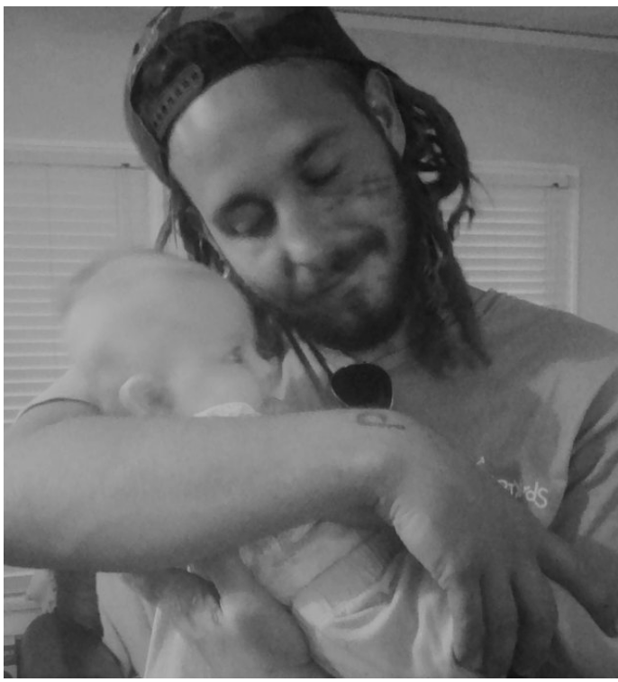
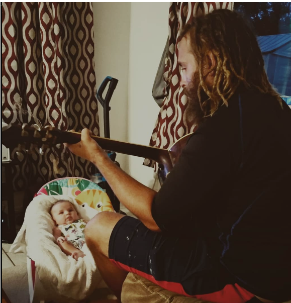

From the first day I held you in my arms, nothing has brought me more joy in this world than your smile. The world changed the moment you were born. The days became brighter, and the birds would sing everyone awake. The nights were no longer lonely because the moon reflected the warmth of your soul. You were just a small bundle wrapped in a blanket. Then your eyes were so deep blue that they were almost violet. I knew at that moment that you were very special and important. I knew the world was meant for you. It's here for you to explore, learn, and love. I may not always be by your side, but you are always in my heart and thoughts. I carry a picture of you with me every day, and it is my most prized possession. I promise Elowyn that I am always on your team. I am always looking after you, even when we are not together.

Elowyn, I know I have been away and distant. I want to help make the world a better place the way you did when you entered it. I am not quite as special as you are, and what I must do can be dangerous, which is why it is important for you to be safe with Mom. I promise I will do my best to stay safe too, so one day I can give you a big hug and kiss again
Most important of all, I want you and Mom to be happy. I want you guys to meet new friends and explore new places. I want you two to love and laugh. Life is meant to be enjoyed and protected. You both make me happy every day, just knowing how far you have both come and seeing your smiles. Keep on smiling and making others smile! You are the most wonderful daughter. Listen to your mother and watch after her. She is a great woman and a good role model.
I Love you Always, Dad.
I am so curious about you and your life. I want to know your likes and dislikes. Tell me all about your favorite things and places you have explored with Mom. Tell me about any friends you have made. Tell me your worries. Whenever you need or want to talk to Dad, you can message me here. I am always ready to hear from you and provide support in any way I am able.